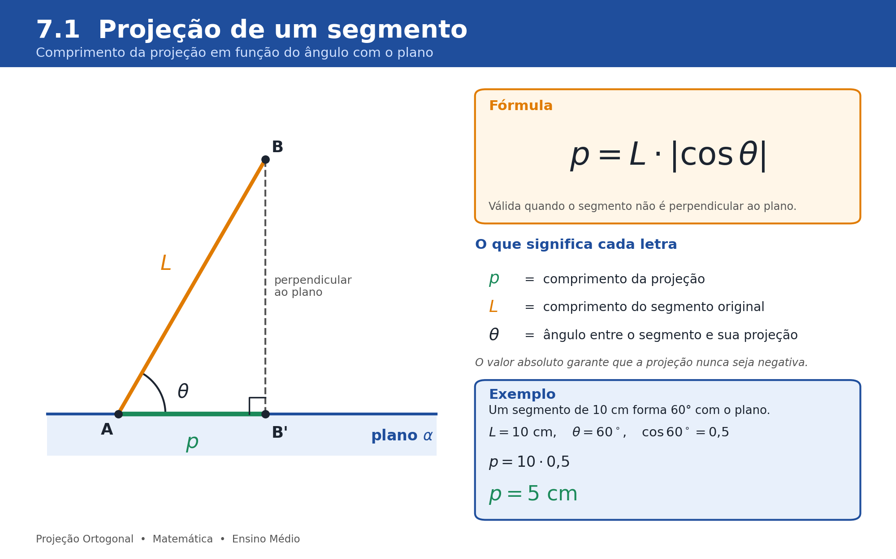
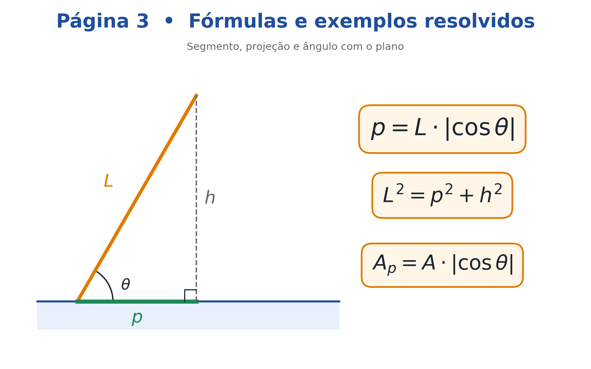
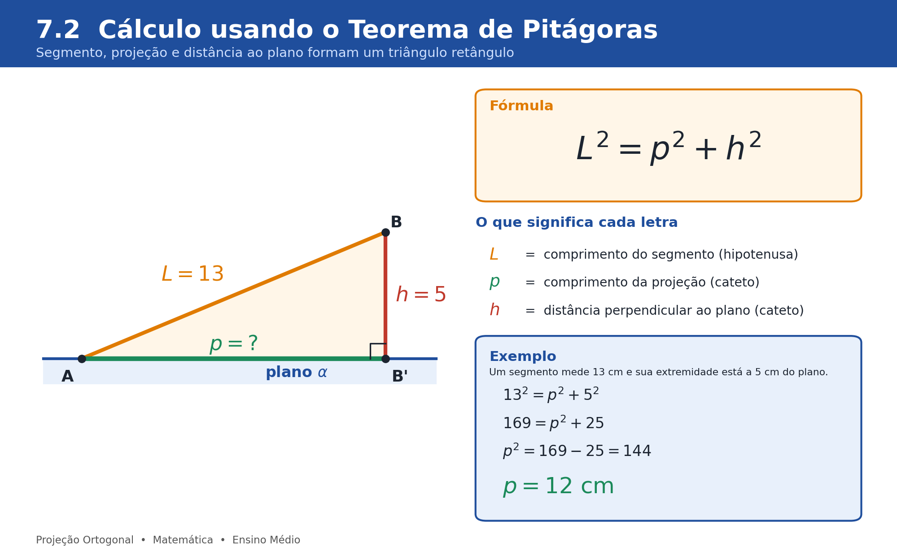
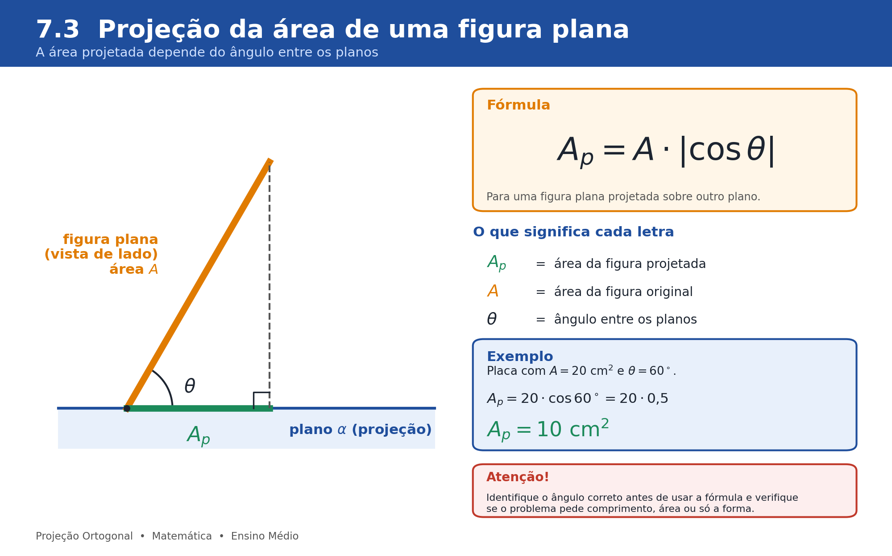

Quando o segmento não é perpendicular ao plano, o comprimento da projeção é p = L · |cos θ|, em que θ é o ângulo entre o segmento e o plano.

A projeção ortogonal pode ser compreendida por meio de construções geométricas e relações matemáticas. No Ensino Médio, muitos problemas se resolvem com o Teorema de Pitágoras e as razões trigonométricas.

Quando o segmento não é perpendicular ao plano, o comprimento da projeção é p = L · |cos θ|, em que θ é o ângulo entre o segmento e o plano.

O segmento, sua projeção e a distância ao plano formam um triângulo retângulo: L² = p² + h².

A área projetada é Aₚ = A · |cos θ|, em que θ é o ângulo entre os planos. Atenção: identifique o ângulo correto antes de aplicar.
Uma pirâmide regular de base quadrada está apoiada sobre sua base, em uma mesa. Uma pessoa a observa exatamente de cima, olhando na direção perpendicular à mesa. Qual figura ela vê?
A) Um triângulo
B) Um quadrado sem nenhuma linha interna
C) Um quadrado com as duas diagonais traçadas
D) Um círculo
E) Um losango sem linhas internas
Resolução:
1. Olhar de cima na perpendicular é fazer a projeção ortogonal sobre o plano da mesa.
2. A base é um quadrado paralelo à mesa, então sua projeção é um quadrado idêntico.
3. O vértice (topo) fica exatamente acima do centro da base, então sua projeção é o centro do quadrado.
4. Cada aresta lateral liga o topo a um vértice da base, então sua projeção liga o centro a um canto do quadrado. Essas projeções formam as duas diagonais.
Resposta: C.
Um segmento AB mede 20 cm. A extremidade A está sobre um plano α e a extremidade B está a 12 cm de distância desse plano. Qual é o comprimento da projeção ortogonal de AB sobre α?
A) 8 cm
B) 12 cm
C) 14 cm
D) 16 cm
E) 32 cm
Resolução:
1. A distância de B ao plano é o segmento perpendicular BB’, com h = 12 cm.
2. O segmento AB, sua projeção AB’ e BB’ formam um triângulo retângulo, com hipotenusa L = 20 cm.
3. Pelo Teorema de Pitágoras: L² = p² + h², então 20² = p² + 12².
4. 400 = p² + 144, logo p² = 256 e p = 16.
Resposta: D (16 cm). Confirmando com a trigonometria: cos θ = 16/20 = 0,8, e 20 · 0,8 = 16.
Uma placa plana retangular de 30 cm por 20 cm está inclinada em relação ao chão. Quando iluminada por raios de luz perpendiculares ao chão, ela projeta no chão uma sombra de área 300√3 cm². Qual é o ângulo entre a placa e o chão?
A) 15°
B) 30°
C) 45°
D) 60°
E) 75°
Resolução:
1. Os raios são perpendiculares ao chão, então a sombra é a projeção ortogonal da placa sobre o chão.
2. A área da placa é A = 30 · 20 = 600 cm².
3. Para figuras planas, a área projetada é Aₚ = A · |cos θ|, em que θ é o ângulo entre os planos.
4. Substituindo: 300√3 = 600 · cos θ, então cos θ = 300√3 / 600 = √3/2.
5. O ângulo com cosseno √3/2 é 30°.
Resposta: B (30°).